Pribadi
Mengenal diri, mengelola emosi, dan mengambil keputusan yang bertanggung jawab. Contohnya mengenali potensi dan mengelola stres.
Ruang aman untuk bercerita, belajar mengenal diri, dan menemukan potensi terbaik selama masa SMP.
INFO L-Sparc (Labsconnect + Vista + Open House) · 13–14 November 2026
Lihat agendaEmpat bidang layanan bimbingan dan konseling untuk menemani kamu tumbuh selama di SMP.
Mengenal diri, mengelola emosi, dan mengambil keputusan yang bertanggung jawab. Contohnya mengenali potensi dan mengelola stres.
Membangun hubungan sehat dengan teman, keluarga, dan lingkungan sekolah. Contohnya komunikasi tegas tapi sopan, atau konflik dengan teman.
Punya kebiasaan dan strategi belajar yang efektif. Contohnya mengatur waktu belajar dan teknik mencatat.
Mengenali minat dan bakat, lalu merencanakan masa depan. Contohnya memilih SMA atau SMK.
Mitos: dipanggil ke ruang BK berarti aku bermasalah atau mau dihukum.
Fakta: kamu boleh datang sendiri kapan saja. Guru BK ada untuk membina dan membantumu, bukan sekadar menghukum.
Kamu boleh datang sendiri atau dirujuk wali kelas. Nggak perlu menunggu masalahnya besar: bingung memilih ekskul, susah fokus, ribut dengan teman, atau lagi sedih, semuanya boleh dibahas.
Sudah pernah curhat? Cek balasan guru BK. Sudah selesai konseling? Isi survei singkat.
Guru Bimbingan dan Konseling
0813 8105 7408Guru Bimbingan dan Konseling
0895 3367 11972Guru Bimbingan dan Konseling
0895 4046 60333Mengenal lingkungan, aturan, dan cara beradaptasi di sekolah baru.
Apa itu Asesmen Kompetensi Minimum dan bagaimana menyiapkannya.
Perubahan fisik dan emosi yang wajar dialami, dan cara menghadapinya.
Membangun pertemanan sehat dan berani menolak pengaruh buruk.
Mengenali bahaya narkotika, psikotropika, dan zat adiktif sejak dini.
Menemukan kekuatan diri sebagai bekal memilih jalan masa depan.
Hasilnya bisa kamu diskusikan bersama guru BK.
Tujuan, hasil, dan dokumentasi lengkap setiap kegiatan ada di Arsip Kegiatan.
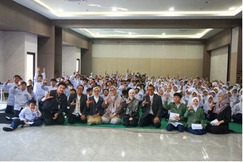
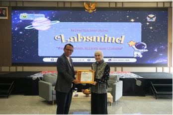
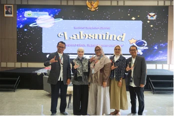
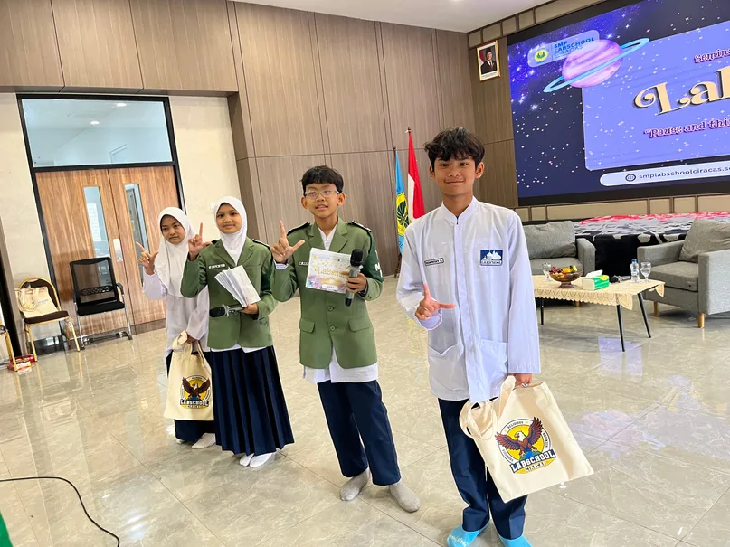
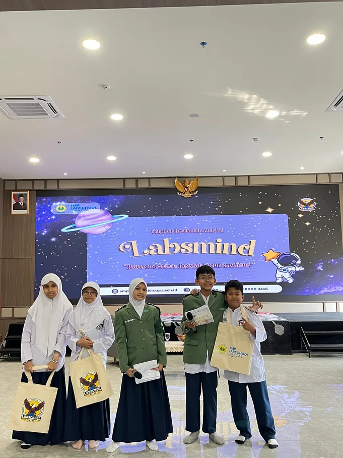
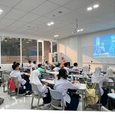
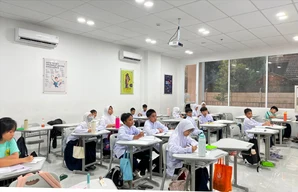
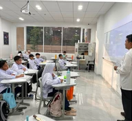
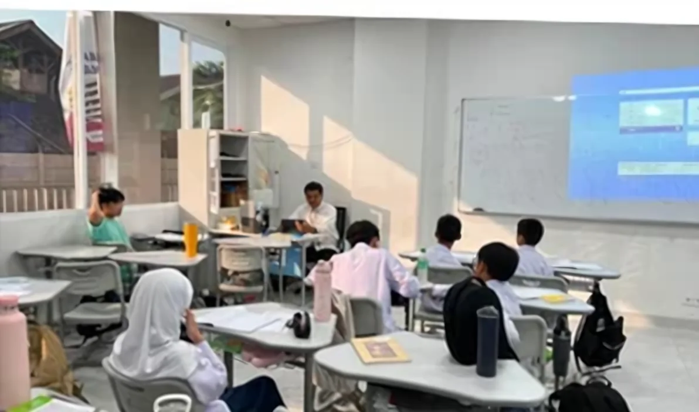
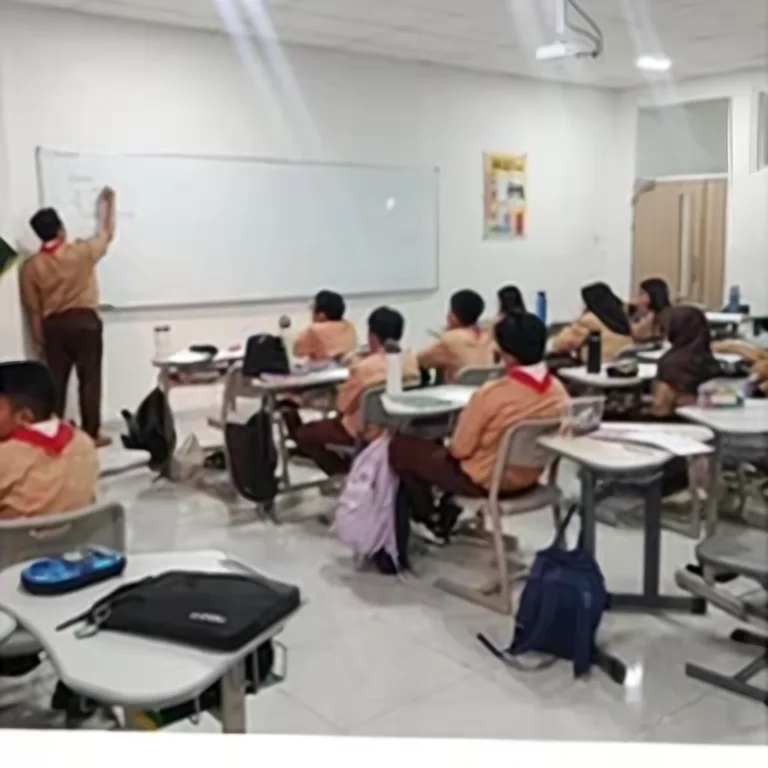
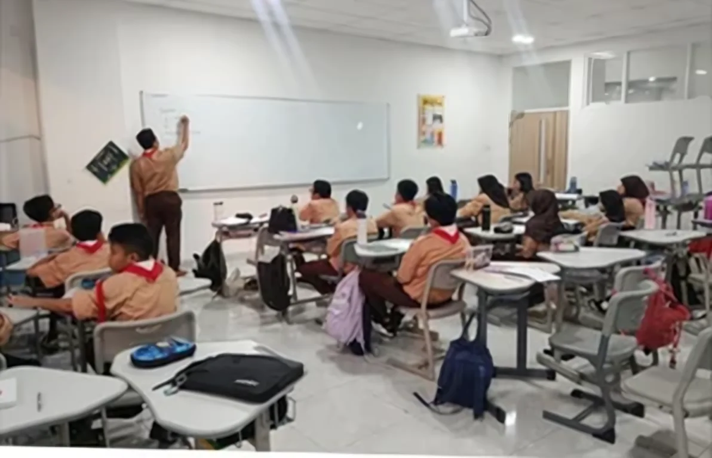
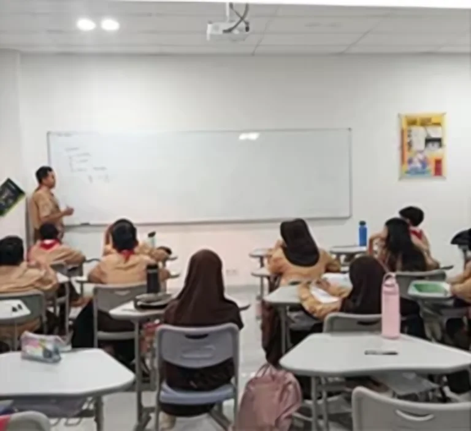
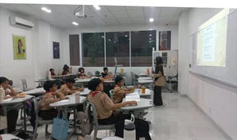
Boleh tanpa nama. Laporan langsung diterima guru BK dan ditangani bersama TPPK sekolah. Kamu akan mendapat kode untuk melihat tindak lanjutnya.
Yang kamu ceritakan tidak disebarkan tanpa izinmu, kecuali ada situasi yang mengancam keselamatan jiwa. Untuk masalah kesehatan jiwa yang berat atau kecanduan zat, guru BK akan menyambungkanmu ke psikolog, dokter, atau lembaga yang berwenang (alih tangan).
Di luar jam sekolah, hubungi layanan berikut atau minta bantuan orang dewasa yang kamu percaya.